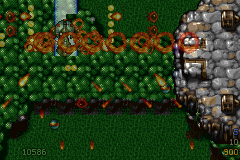

一個可行性問題，變成完整效能工程
專案起點很單純：能不能把 DOS 時代的 Tyrian 搬到 Game Boy Advance， 同時盡量保留原始遊戲邏輯、資料與行為？當目標從第一關技術展示擴展到 四個 Episode，問題便不再只是縮小畫面或重接聲音，而是如何在每一幀都 遵守 CPU、記憶體、VRAM、OAM、色盤與傳輸時限。

最佳化順序：先讓工作消失
受限平台最有效的改善，通常不是讓一百次操作各快一點，而是證明其中 八十次根本不必發生。專案採用的順序刻意從系統層一路走向指令層：
- 消除不必要的工作。 不掃空 slot，不重建沒有變化的頁面，不在 gameplay 重做 build 已能完成的解碼。
- 縮小 working set。 只保留目前可見、即將使用或能影響玩法的資料。
- 選對資料結構與表示法。 讓密度、生命週期與硬體格式直接反映在布局中。
- 改善 locality 與 cache。 預測可以加速，但 canonical key 與 generation 仍負責正確性。
- 排程有限資源。 OAM、OBJ VRAM、DMA 與 frame deadline 都必須明確分配。
- 合併與批次處理。 同一批 candidate 只建立一次，讓多個決策共享結果。
- 最後才最佳化 hot kernel。 先量測 machine code 與 cycles，再決定 ARM、IWRAM 或保留 C。
資料結構必須反映實際密度
Tyrian 的 enemy、shot 與 effect pool 大多有固定容量，但每個 tick 的有效 物件常遠少於上限。Active／Free Bit Directory 讓稀疏 pool 直接跳到有效 slot；密集時則切回連續掃描，避免 bit iteration 本身反而成為成本。這不是 「所有 pool 都套 bitmask」，而是依真實密度選 traversal。
Cache 也採相同原則。Validated direct-mapped hint 先猜最可能命中的格， 但命中後仍驗證完整 key、layout 與 ownership generation；hint 失效只會 回到 canonical lookup，不會把錯誤 tile 當成正確答案。
Boss 問題最後是資料表示問題
多部件 Boss 一度同時壓迫 Sprite2 解碼時間與 OBJ VRAM。只加快 lookup 無法改變容量，因此 compact cache 把 32×32 影格由 1 KiB 8bpp 改成 512-byte 4bpp；build-time 先完成不可變 RLE 與 tile 重排，runtime 再依 關卡 palette 上色。色盤訓練與 Boss cohort 預熱則把昂貴工作移離登場尖峰。
這個轉折很重要：瓶頸有時不是程式跑得不夠快，而是資料表示法讓硬體 永遠裝不下。改變 representation 後，速度、容量與可預測性才一起改善。
深入閱讀：Sprite2 預解壓與二級快取 · 4bpp 受限色盤訓練
OAM 不夠，就把問題當成排程
128 個 OAM 不可能容納所有極端畫面，但「誰先消失」可以由軟體決定。 owning pool 與全關卡 Boss manifest 先建立確定身分；玩家、Boss、敵人與 玩法子彈取得保障，爆炸與裝飾效果公平輪替使用餘額。Candidate snapshot 又讓 demand、cache prime、OAM admission 與 render 共享同一份分類。
超載因此退化成可預期的低優先效果閃爍，而不是透明敵人、Boss 缺件， 或過期 DMA 覆寫新資源。Priority 解決重要性，fairness 解決長期飢餓， ownership generation 則阻止 cache 污染。
Simulation 和 Presentation 必須分開
Drop-frame 不是把半張畫面交給 LCD。若新場景無法安全完成，就保留上一張 已完整提交的 OAM、VRAM 與背景狀態；遊戲輸入、敵人、碰撞、Boss 流程、 RNG 與音訊仍按固定時間步進。持續超載再由 Adaptive presentation dispatch 將完整場景鎖到規律 cadence，而不是讓整個遊戲變慢。
正式設定最多讓一張 presentation 代表兩個 source ticks，目標下限約 17.4 FPS；Maxmod 服務仍跟著每個實體 VBlank。被捨棄的只有已被新狀態 取代、尚未送出的中間畫面，不是任何會改變遊戲結果的計算。
深入閱讀：固定時序、VBlank 與 Frame Drop · Adaptive 呈現派送
正確性約束先於碰撞最佳化
碰撞公式本身不一定最難；真正危險的是命中後可能立即殺死 link group、 釋放 slot 或生成新物件。最佳化 traversal 仍必須保存原始 pool 順序與 mutation semantics。Active mask 縮小候選集，packed collision 讓常見 miss path 更短，但 hit path 保留保守控制流，並以 C reference 做差分測試。
ARM 組語是最後一刀，不是第一刀
ARM7TDMI 沒有現代 SIMD，也沒有硬體除法器；小型色距、packed collision、 starfield divmod 等 leaf kernel 在 profiling 證明值得後，才適合放入 IWRAM 或改寫 ARM。分支多、資料依賴高的 scheduler 則可能由最佳化 C 做得更好， 實測也曾出現 ARM bit-scan 慢於 C 的結果。
判斷依據不是 source 看起來是否 branchless，而是 compiler 產生的 machine code、IWRAM 成本、A/B benchmark 與 differential test。組語是精準工具， 不是專案成熟度的裝飾。
從資產到回歸，形成同一個工程閉環
系統層最佳化必須有可重現的資料邊界。ROMFS 保留原始 MUS、SHP、PIC、 HDT 與 LVL 的索引語意；build-time 只搬走不可變且可驗證的解碼、訓練與 預烘培，runtime 留下會受關卡狀態影響的選擇。Telemetry 再量測 cache、 OAM、VBlank、route 與音訊，讓每次改善都能同時驗證速度與 source parity。
這也是少量補充於兩篇原始總結之外的關鍵：架構、工具鏈與回歸不是三件 分離工作。沒有 build 的可重現性和 runtime 的證據，最佳化就很容易變成 只對單一截圖有效的 per-level patch。
深入閱讀：ROMFS 與可擴充資料層 · Telemetry 與自動回歸
給下一個受限平台移植的原則
- 不要先問如何加快完整掃描。 先問能否只走有效物件。
- 不要先問如何顯示所有 Sprite。 先定義誰必須被保障、誰可以公平退化。
- 不要先問 gameplay 如何即時完成昂貴工作。 先找出能否移到 build、loading 或 warm-up。
- 不要先問能否改成 branchless 或 ASM。 先看 machine code、profiling 與完整 A/B。
- 不要用速度交換規格。 Authoritative simulation、資料索引與原始控制流必須有回歸保護。